O pintor holandês é um dos mais conhecidos mundialmente, em 2019 o museu chegou a receber mais de 2,1 milhões de visitantes, tornando-se o mais visitado da Holanda. Localizado na "praça dos museus", no coração da cidade, possui fácil acesso e nas proximidades há outros museus interessantes, parques e restaurantes. Para evitar filas, recomendo fazer um agendamento online previamente. Os ingressos custam 19 € e para menores de 18 anos é gratuito. Há uma grande disponibilidade de horários, entre 9h e 16:30, com entradas intervaladas de 15 minutos, para evitar aglomerações.
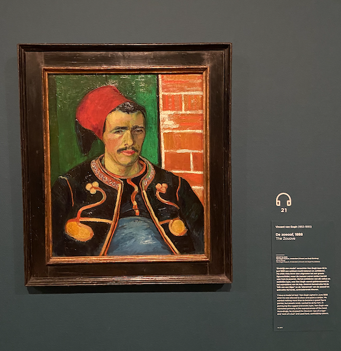
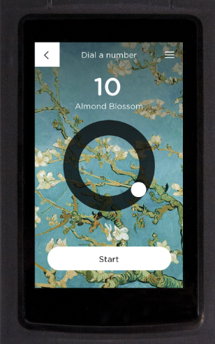
Algo que indico se você deseja ampliar sua experiência é o guia multimídia, que costuma ser oferecido em quase todos os museus de Amsterdam. No caso do Museu Van Gogh, é cobrado um valor adicional ao ingresso de 3.50 € para adultos e 2 € para crianças. Este guia possui 11 línguas disponíveis, incluindo o portugês! Acompanhado de um fone de ouvido, o tablet categoriza as obras por números que são informados ao lado de cada pintura. Assim, você obtém mais informações sobre as telas, de forma prática e acessível.
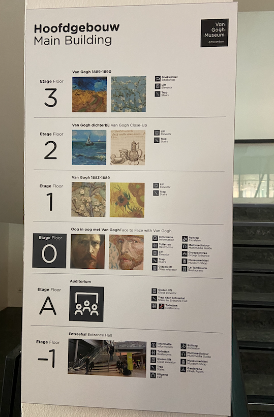
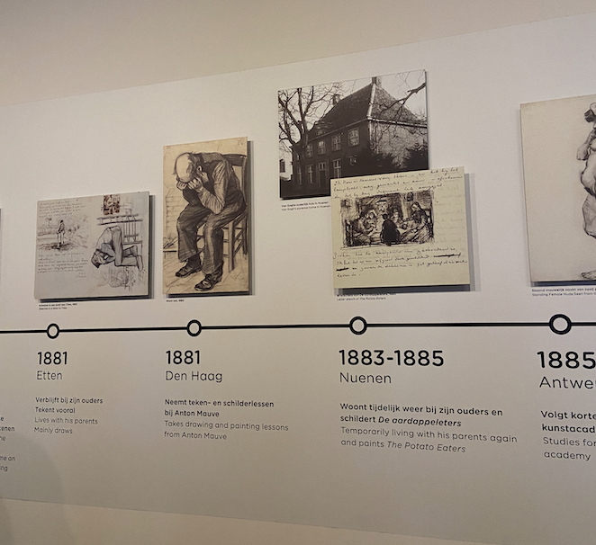
O museu possui 4 andares com exposição, sendo divididos cronologicamente e por temas. O andar 0 por exemplo é dedicado apenas para os autorretratos, começando pelos primeiros rascunhos, estudos de cor e técnicas de pintura.
Em apenas 1 década de trabalho, Van Gogh produziu 200 obras e 500 desenhos, portanto uma visita por esse museu é como uma jornada pela vida do pintor, mostrando seus altos e baixos e principalmente sua tentativa de aperfeiçoar sua maneira de se expressar através da arte.
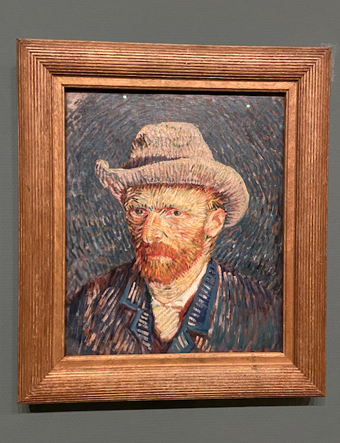
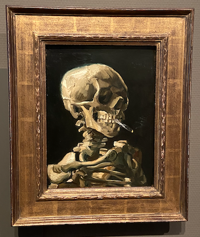
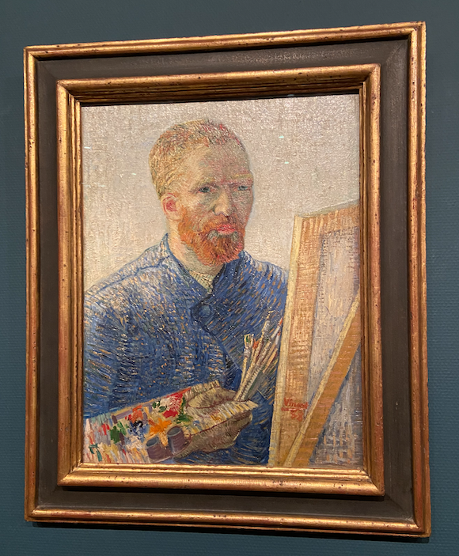
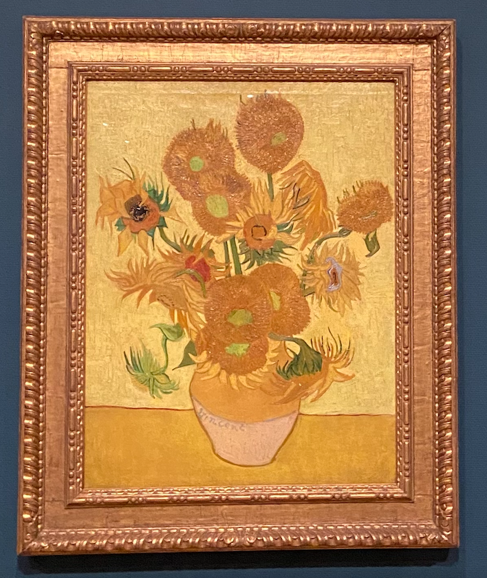
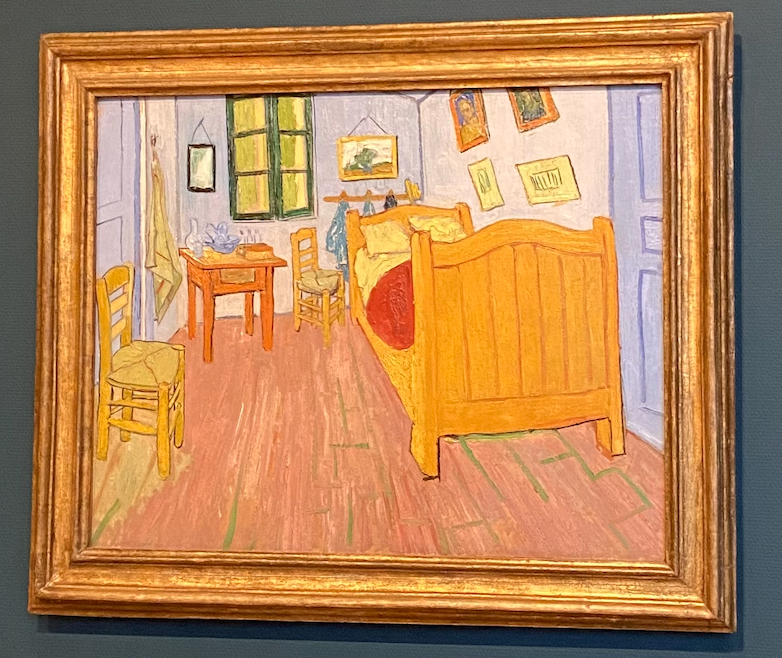
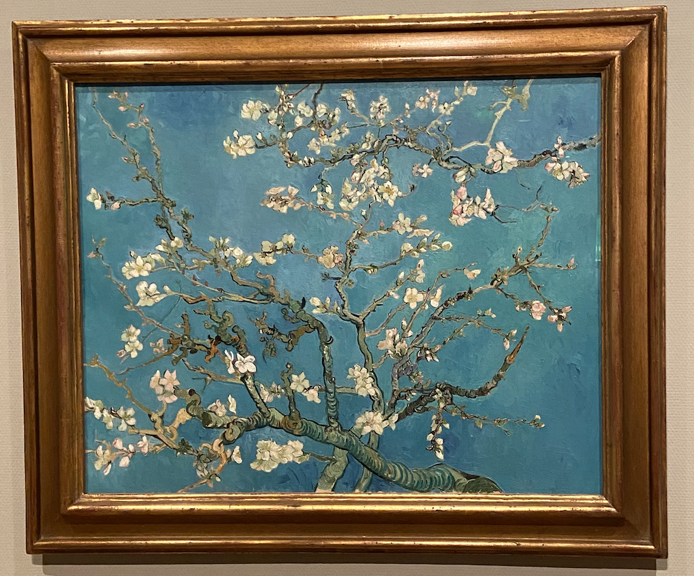
Algumas das obras que mais me chamaram a atenção: autorretrato com chapéu de feltro, caveira com cigarro aceso, autorretrato como pintor, os girassóis, o quarto de Van Gogh em Arles e a amendoeira em flor.
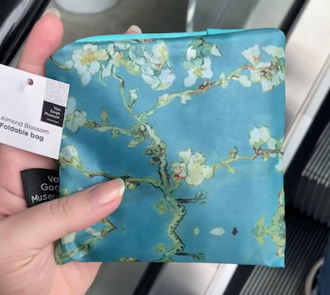
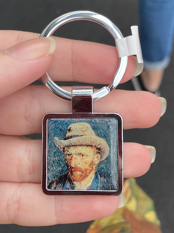
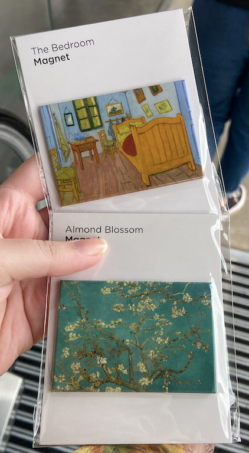
No final do passeio, recomendo dar uma olhada na lojinha, que tem os mais diversos produtos inspirados na arte do holandês. Como por exemplo, bolsas, chaveiros, imãs, cadernos, garrafas, etc. O preço é elevado mas vale a pena para quem gosta de levar algo de recordação para casa.
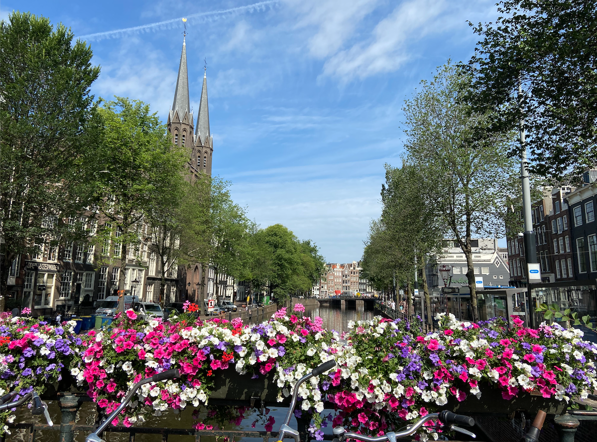
Se você tiver a oportunidade de ir para Amsterdam, esse museu é indispensável no seu roteiro da viagem. Espero que a minha experiência tenha te ajudado e te instigado a visitar esse museu. Se ficou alguma dúvida deixe seu comentário aqui embaixo e não se esqueça de nos contar como foi a sua experiência!